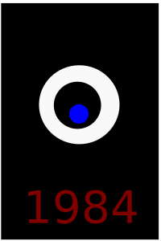

NieR:Automata
About the Game:
Developer:Platinum games
Genre:Hack & slash Great Soundtarck,Bullet Hell, Story Rich,Female Protagonist
Link to game: Steam store
This game which I regard as the Game of the Year for 2017 (Not that i have played alot of games) is just absolutely amazing. As Earth has been overrun by machine life-form created by alien, humanity hopes to bring back their homeland by deploying androids to eradicate the machine life-form, you follow the journey of android 2B and 9S as they complete their missions given by the headquarter.But is all seems as simple as that?
Well that was the simplest synopsis,Now come to why you should play NieR:Automata, this game has non-repetitive combat gameplay with a bullet hell aspect to the game as you upgrade your weapons and chip with enticing plot to keep you on your toes for a long time as you explore the vast and beautiful world. Accompanying that ,you will be in a emotional wildride as you uncover the truth about humans,androids and machine life-form. As you question the purpose of existence of androids and machine-lifeform.
From the new world
About the Anime:
Anime studio:A-1 pictures
Genre:Psychological,Mystery,Supernatural,Horror
More about the anime:myanimelist
Imagine a world where a small percentage of human is able to use psychokinesis(PK user), however the rest of humanity cannot condone such a different and unknown creature,This induced fear causes a public outcry to eliminate the PK user which in the end follows a downfall of civilisation, one century later, we follow the story of Shun, Saki, Maria, Satoru and Mamoru. As weird events unfold in their eye and they find outs the truth of the society they live in .
This show clearly depicts humanity's fear of the unknown as a whole and how they response to the unknown. Accompanying that with a eery soundtrack and with horror elements really makes this show stands out from other. There is this mixed emotion I have after watching the show it's hard to explain it really makes you wonder about the humanity, whether we are just a bunch of horrible nuts or this is just how nature made us to be.You can really feel the humanity's typical distaste towards human of different kinds and will do anything neccesary to eradicate them if push comes to shove, all in the name of protecting humanity.
Black Mirror
About the series:
Where to watch:A Netflix Orignal series
Genre:Psychological,Dystopia,Horror
More about the series: Available on Netflix
Black Mirror exposes the ugliness of humanity through the advancement of technology . E.g what if we have a social credit system where everyone rates other people from 1 Star to 5 star through their phone, and the higher your rate of star ,the more privilege you will get or a technology where you implant a device in your children's brain so that you can monitor his/ or her heartrate /location/and vision. This show really provokes thought experiment as our current society and technology may progress or even surpass that stage as shown in the series, it reallys make you self reflect about your own philosophy,principle and beliefs.
1984
1984 is a dystopia novel that depicts a society where freedom of anything is non-existential,Telescreen(which acts as a television,security cameras and microphone) are always recording and any action or speech of betrayal or opposing ideology against the Party ( even when you sleep-talks)will result in appearance of Thought Police. We follow the life of Winston Smith, a person who does not fit well in this society as his feeling of rebellion grows when he thought there might be hope for a future he canlive in a world where The Party cannot interfere with him.
This novel has potray a well depicted dystopian society, where people has been brainwashed and indoctrinated from young to fit with society standards set by the one with powers aka "The Party". You can really feel the helplessness and loneliness of being a person like Winston who can either only thinkhe is the crazy one or the rest of the world is insane . On the other hand ,